Reasoning about intentions and actions from a first-person (egocentric) perspective remains a fundamental challenge for multimodal large language models (MLLMs). Unlike third-person (exocentric) videos that capture scenes from an outside observer, egocentric videos reflect the actor's continuously changing viewpoint, introducing partial observability, limited field of view, and self-referenced motion.
We introduce EgoVITA, a reinforcement learning framework that enables MLLMs to reason through structured planning and verification. Built on Group Relative Policy Optimization (GRPO), EgoVITA alternates between two stages: (1) an egocentric planning phase, where the model reasons from a first-person viewpoint to predict a step-by-step plan of future actions, and (2) an exocentric verification phase, where it switches to a third-person perspective to check the visual and logical consistency of that plan.
Through GRPO, the model learns to make plans that are causally predictive of upcoming visual observations, leading to more coherent and visually grounded reasoning. EgoVITA achieves significant gains on egocentric reasoning tasks, outperforming the baseline Qwen2.5-VL-7B by +7.7 on EgoBlind and +4.4 on EgoOrient, while maintaining strong generalization on exocentric video tasks.
EgoVITA decomposes egocentric video reasoning into two complementary components: an egocentric planner that performs procedural reasoning by predicting first-person action sequences, and an exocentric verifier that evaluates these plans from a third-person perspective for visual and logical consistency.
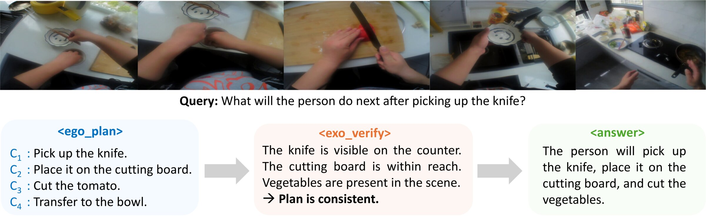
Given a video and query, the model generates an <ego_plan> describing anticipated actions, then an <exo_verify> that audits the plan from a third-person perspective, before producing the final <answer>.
EgoVITA is trained in two phases. We first apply supervised fine-tuning (SFT) to initialize structured plan-then-verify reasoning. We then optimize the model using Group Relative Policy Optimization (GRPO) with two dense reward functions.

Stage I: SFT
The policy model is initialized to learn the structured output format with three components: egocentric planning, exocentric verification, and final answer generation. This stage establishes a stable base policy capable of generating structured outputs.
Stage II: GRPO
The model generates multiple reasoning trajectories for each video-query pair and scores them using a composite reward function. The policy is then refined based on relative performance within each group, enabling exploration of diverse reasoning paths while maintaining stability.
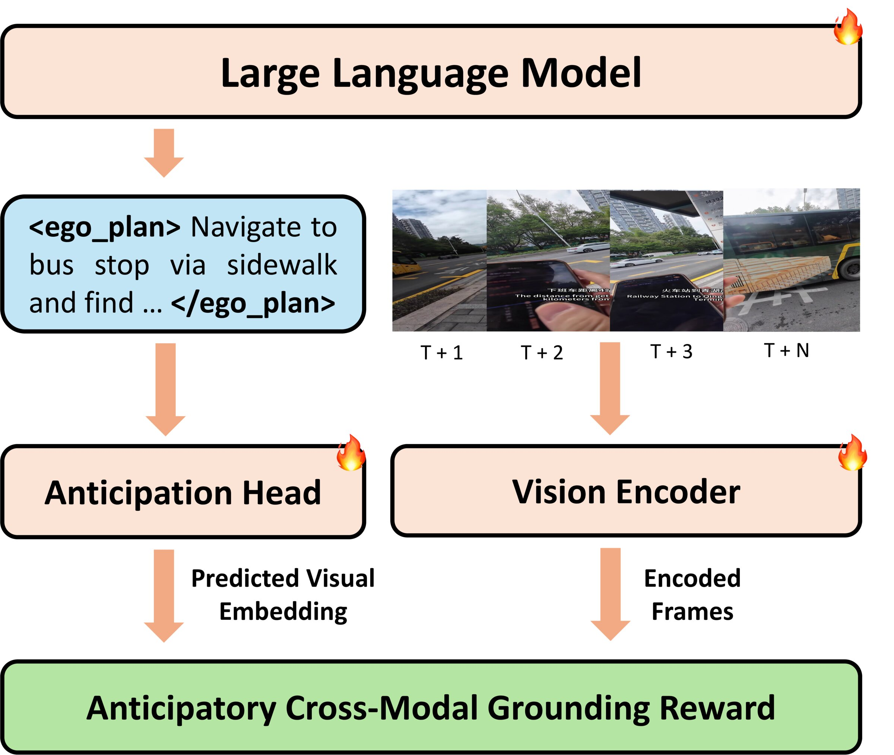
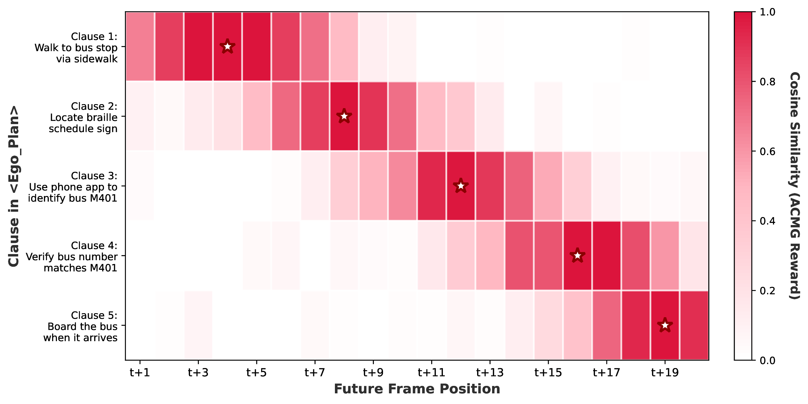
ACMG is a novel dense reward mechanism that ensures generated plans are temporally predictive and visually grounded. Each plan clause is projected into visual space via a trainable Anticipation Head and compared to future frames using cosine similarity. The reward measures how well the predicted visual embedding matches any of the next N=16 frames, encouraging the model to anticipate what will happen next rather than just describing the current scene.
The temporal grounding heatmap (right) shows how different plan clauses align with future frames. Earlier clauses ground to near-future frames while later clauses align with more distant events, demonstrating that the model learns temporally structured anticipation.
EgoVITA uses a weighted combination of four reward components: (1) Format Reward for correct tag usage, (2) Answer Reward for alignment with ground-truth, (3) ACMG Reward for temporal and visual grounding, and (4) Confidence Reward for consistent third-person validation. To prevent catastrophic forgetting, we periodically interleave GRPO updates with lightweight exocentric regularization on held-out VideoQA data.
We apply EAGLE to visualize which regions contribute to action prediction. Qwen2.5-VL shows largely temporally static saliency, with attention frequently concentrated on background elements. In contrast, EgoVITA demonstrates temporally progressive attribution that shifts across frames, increasingly focusing on task-critical objects as the action unfolds.
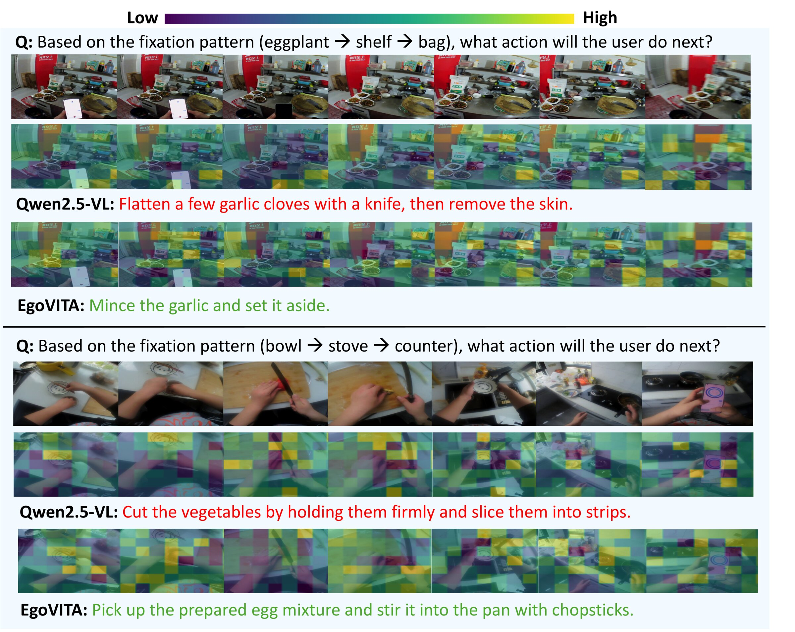
Qwen2.5-VL shows scattered, static activations EgoVITA progressively focuses on task-relevant objects
EgoVITA consistently improves egocentric video understanding across multiple foundation models. On Qwen2.5-VL-7B, it achieves substantial gains of +7.7 on EgoBlind, +3.7 on EgoThink, and +4.4 on EgoOrient. Importantly, EgoVITA not only improves egocentric reasoning but also maintains or enhances performance on exocentric benchmarks.
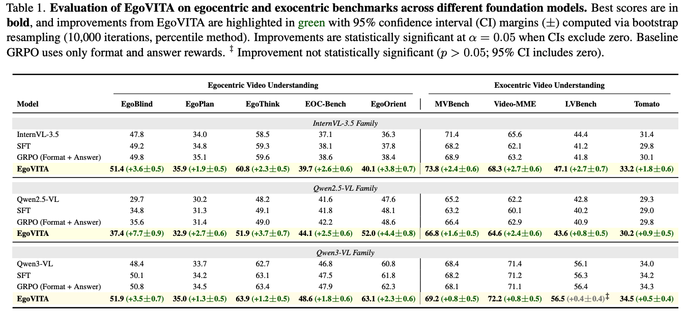
EgoVITA outperforms recent egocentric reasoning models including EgoThinker and EgoVLM. Despite using far fewer training samples (47k vs. 5M for EgoThinker), EgoVITA achieves higher accuracy, demonstrating the effectiveness of dense multimodal rewards.
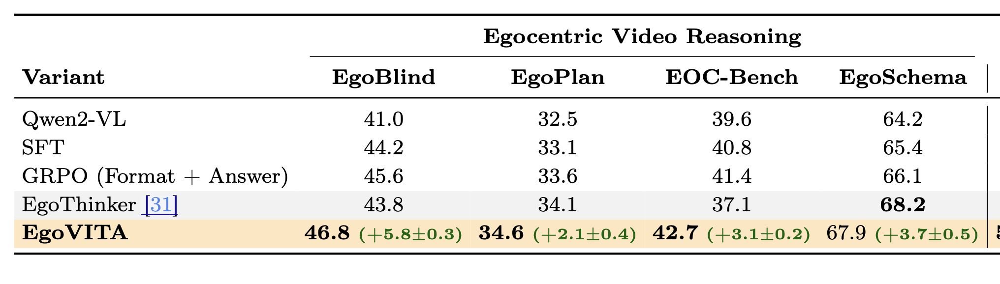
Comprehensive studies validate the importance of each component and the stability of the framework.
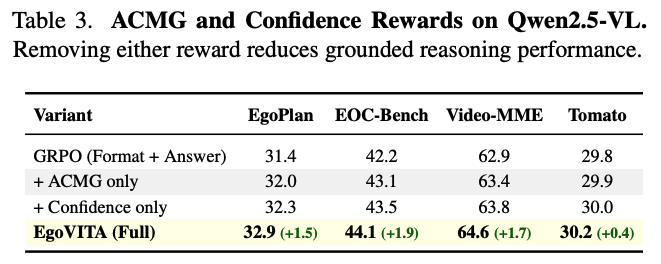
The ACMG and Confidence rewards are complementary, with the full system achieving greater improvements than either alone.
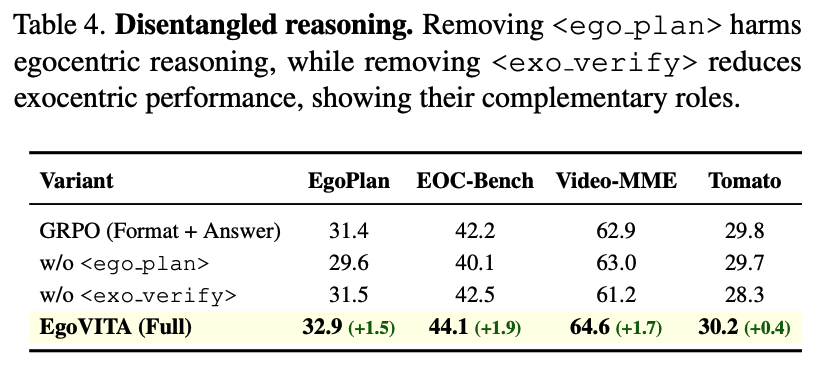
Removing either the egocentric planning or exocentric verification stage degrades performance on their respective task types.
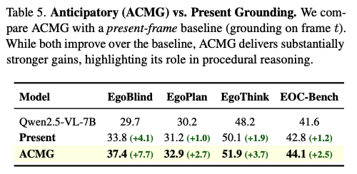
Anticipatory grounding substantially outperforms present-frame grounding, confirming the value of looking ahead.
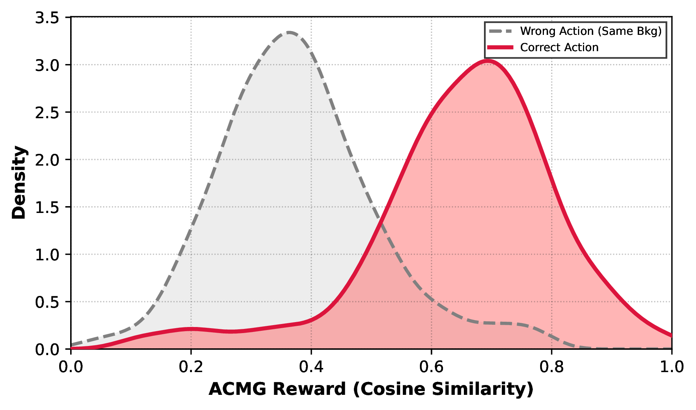
ACMG captures action-dependent visual changes rather than static scene features, with a clear separation between correct and wrong-action scores.
EgoVITA generates sequential, safety-critical actions grounded in specific visual frames. For a blind person crossing an intersection, EgoVITA correctly anticipates the "sweep cane" action before the person reaches the curb, while baseline models give generic, visually ungrounded responses.
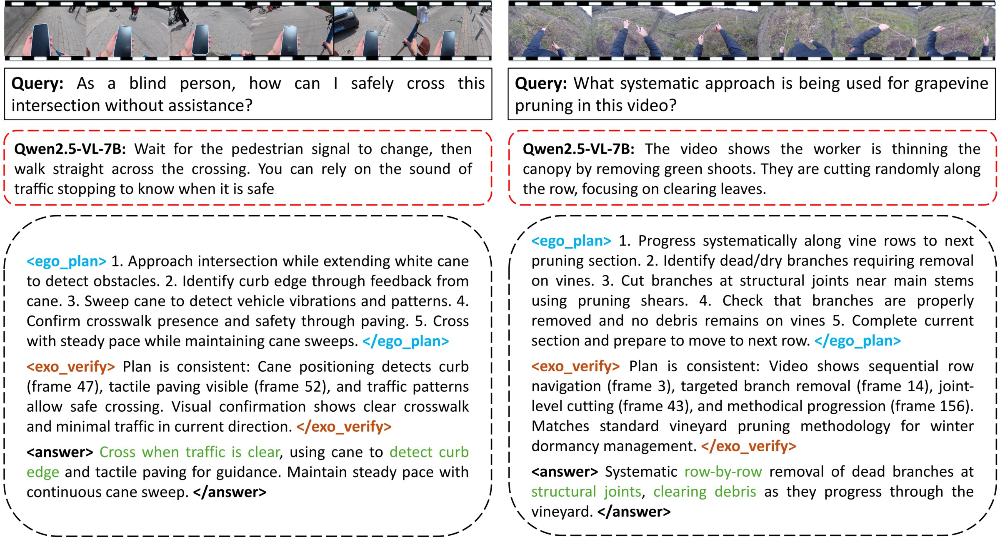
The exocentric verification stage actively corrects the egocentric plan by catching procedurally significant omissions. Below, <exo_verify> identifies missing steps (e.g., sterilization, slicing) and incorrect orderings by cross-referencing specific timestamps, producing more complete and accurate final answers.
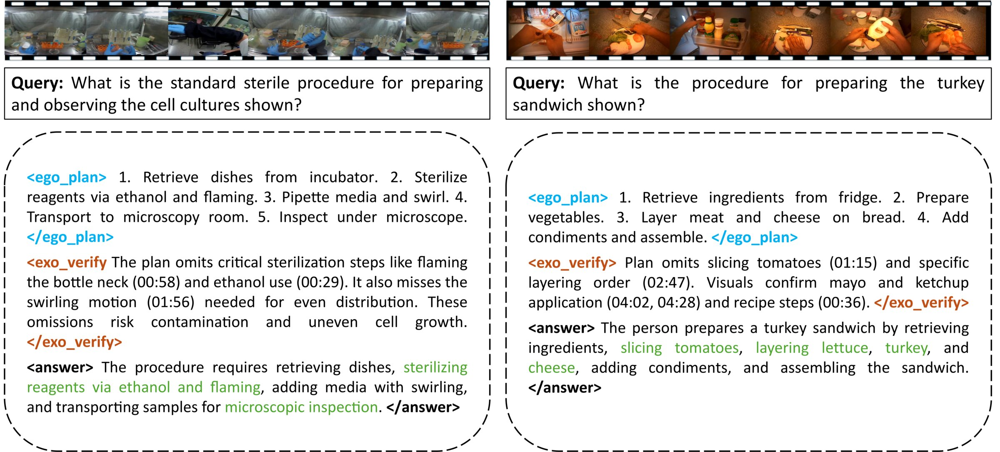
@inproceedings{kulkarni2025egovita,
title={EgoVITA: Learning to Plan and Verify for Egocentric Video Reasoning},
author={Yogesh Kulkarni and Pooyan Fazli},
booktitle={Proceedings of the European Conference on Computer Vision (ECCV)},
year={2026}
}